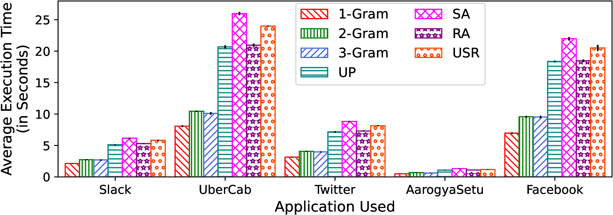
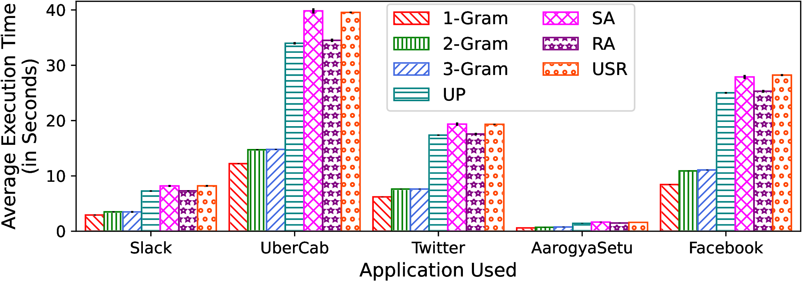
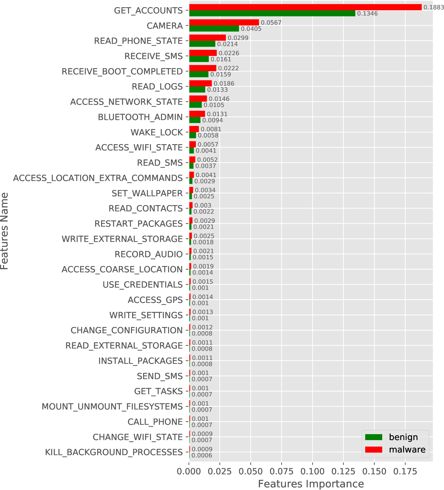
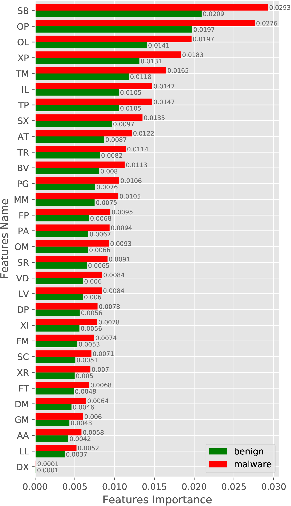
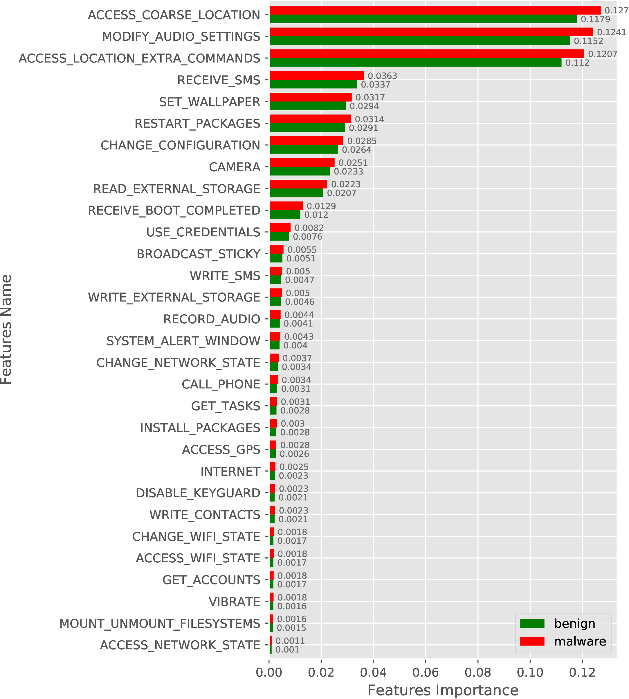
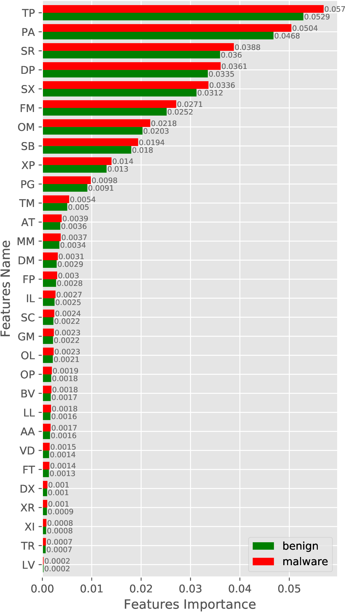
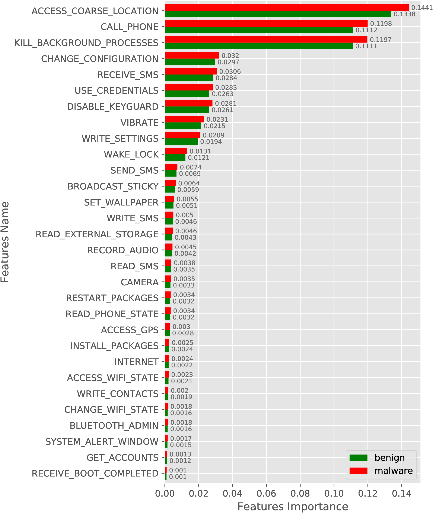
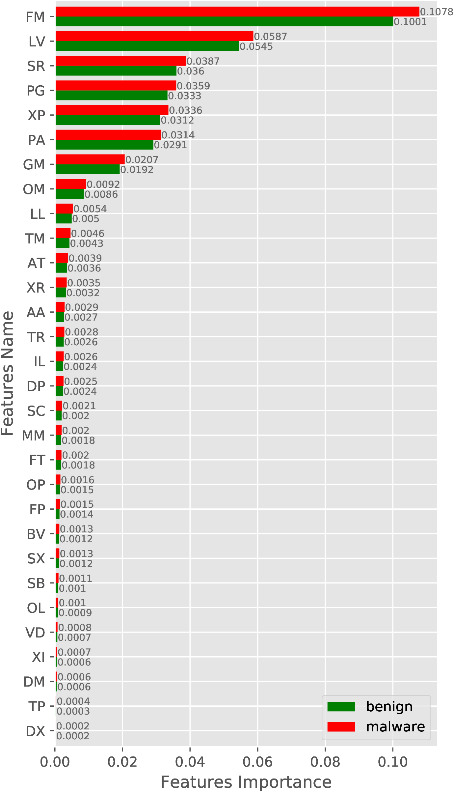

Additional Information of DeepDetect
1 Dataset Used
This work uses multiple dataset (see Table 1) for the evaluation of DeepDetect. Details of these dataset are as follows:
| Data/Source | Year | Malware | Benign | Description and Usage |
| AMD[5] | till 2016 | 24, 553 | -- | 80% randomly selected samples are used for training final model, |
| VirusShare[6] | Apr. 2018 | 20, 979 | -- | feature engineering and as known samples and remaining 20% is unseen |
| Play Store | Apr. 2018 | -- | 56, 346 | samples which is also used in feature comparison. |
|
Androzoo-2019 |
2019 |
5380 |
5380 | Downloaded from Androzoo project for the year 2019 and used as new |
| App for the evaluation. | ||||
|
Obfuscated |
2019 |
4993 |
-- | Obtained by obfuscating malware of Androzoo-2019 using Obfusapktool, |
| which is categorized in six category. | ||||
|
Space & time | 2016 | 5110 | 45988 | We have downloaded 87,634 unique samples from Androzoo project |
| 2017 | 1424 | 12624 | spaning for 4 years. We use samples from 2016 for training and rest for | |
| 2018 | 1182 | 10444 | the evaluation of DeepDetect quarter wise by removing potential biases | |
| 2019 | 1105 | 9757 | by including only ~10% malware samples for each quarter of every year. | |
Firstly, We use a class balanced dataset that consists of 96,748 Apps. The dataset has 40,402 unique malware distributed across more than 70 different classes of malware. These distributed set of malware helps the classifier to learn more about different variants to identify unseen malicious Apps. In the dataset, the malware samples are collected from AMD[5] and VirusShare[6]. For benign Apps, we have crawled through the Play Store and gathered 65,806 samples. These samples were passed to VirusTotal[7] to make sure they are benign. The Apps that are identified as malicious by even one antivirus engine on VirusTotal are discarded to create the benign dataset resulting in 56,346 benign samples. AMD dataset contains malware collected between the years 2012 to 2016, whereas the malware from VirusShare and benign Apps from Play Store were collected in April 2018. This dataset is widely used in our work such as training the model, feature engineering and testing. We randomly separated the 80% dataset which we use for training a model and feature enginnering part. These 80% samples are also used for evaluating a model in the case of known samples. The reaming 20% samples (Evaluation set) are being used to evaluate the efficacy of different features and our model against the unseen samples. An unseen App referes to the sample that is not the part of the training samples but may belongs to the same period as of training sample or even prior to that
Secondly, we have collected 10760 unique samples from AndroZoo project (referred to as Androzoo-2019) that contains 5380 malware samples and rest are benign which belongs to the year 2019 only. We use these samples to evaluate the efficacy of DeepDetect against the new sample. New samples are those samples whose Dex date period is always after the Dex date period of training samples.
Thirdly, we have collected five samples of Pegasus malware from the CloudSek organization to check the ability of DeepDetect to identify the Pegasus malware. Only these five unique samples are available, hence we have used the same for evaluation.
Additionally, we have created a dataset of obfuscated malware samples by obfuscating the malware sample of Androzoo-2019. We use Obfusapk tool to create this dataset and successfully generated 4993 uniques obfuscated samples which false in six category.
Lastly, we have also collected 87,634 unique samples spanning for four years (2016 t0 2019) In this dataset, we have collected ~10% malware sample for each quarter of every year and remaining 90% as benign sample. These samples are being used to evaluate DeepDetect by removing potential biases across time and space. From these samples, we use samples from 2016 to training a model and rest for the quarter wise evaluation.
2 Features Used in DeepDetect
The feature used in DeepDetect are as follows:
(i) Numeric Features: List of numeric feature used are as follows:
Services
Brodcast Receivers
Content Providers
Custom Permissions.
(ii) Requested Permissions: The list of requested permission used are as follows:
android.permission.ACCESS_NETWORK_STATE
android.permission.RECEIVE_SMS
android.permission.VIBRATE
android.permission.ACCESS_COARSE_LOCATION
android.permission.INSTALL_PACKAGES
android.permission.READ_SMS
android.permission.PROCESS_OUTGOING_CALLS
android.permission.READ_PHONE_STATE
android.permission.WRITE_EXTERNAL_STORAGE
android.permission.WAKE_LOCK
android.permission.SEND_SMS
android.permission.INTERNET
android.permission.GET_ACCOUNTS
android.permission.DISABLE_KEYGUARD
android.permission.CHANGE_WIFI_STATE
android.permission.ACCESS_WIFI_STATE
android.permission.READ_LOGS
android.permission.CALL_PHONE
android.permission.READ_CONTACTS
android.permission.GET_TASKS
android.permission.WRITE_SMS
android.permission.SET_WALLPAPER
android.permission.ACCESS_GPS
android.permission.WRITE_SETTINGS
android.permission.READ_EXTERNAL_STORAGE
android.permission.SYSTEM_ALERT_WINDOW
android.permission.RESTART_PACKAGES
android.permission.MOUNT_UNMOUNT_FILESYSTEMS
android.permission.CHANGE_NETWORK_STATE
android.permission.WRITE_CONTACTS
android.permission.CAMERA
android.permission.KILL_BACKGROUND_PROCESSES
android.permission.ACCESS_LOCATION_EXTRA_COMMANDS
android.permission.BLUETOOTH_ADMIN
android.permission.USE_CREDENTIALS
android.permission.RECORD_AUDIO
android.permission.MODIFY_AUDIO_SETTINGS
android.permission.BROADCAST_STICKY
android.permission.CHANGE_CONFIGURATION
(iii) 2-Gram Opcode Sequence: The 2-Gram opcode sequence used in DeepDetect are shown bellow. To know about the Reduce instruction set symbols, plese see Table 2.
LL,SC,SR,BV,TM,
AA,FM,OM,TR,XP,
GM,XI,PA,AT,OL,
DM,DP,FP,SX,OP,
FT,LV,MM,TP,SB
| Symbol | Description |
| A | Arithmetic operation instructions |
| B | Branch instruction (Conditional jump like if-eq). |
| C | Comparision instruction like cmpl-float |
| D | Data Definition instructions like const/4 |
|
F | Type conversion instructions (int-to-long, int-to-float) |
| G | Get instructions (aget, aget-wide) |
|
I | Method call instructions (invoke-direct, invoke-virtual ...) |
| J | Jump instructions (Unconditional) like goto. |
|
L | Lock instruction, the use to acquire/release a lock |
| (monitor-enter and monitor-exit) | |
|
M | Data manipulation instruction like move and its variants |
| O | Exception instruction (through) |
| P | Put instructions (aput, aput-wide) |
| R | Return instruction like return-void |
| S | Bit-wise operation instructions (and-int, shl-int) |
| T | Type judgement like check-cast |
| V | Array operation instructions like array-length |
| X | switch case instructions |
3 Additional Experiments and Results
This section contains additional results and experiments that have carried out for the evaluation of DeepDetect and does not showcase in original paper due to the page limit.
3.1 Performance Comparison of Features
In the paper, we have shown only the ROC curve along with the AUC value. The evaluation results against other metrices is shown in Table 3.
| Features | #Features | Pre (%) | Rec (%) | F1 (%) | FPR (%) |
|
1-Gram | 18 | 94.71 | 91.74 | 93.42 | 3.33 |
|
2-Gram | 30 | 96.26 | 94.25 | 95.39 | 2.40 |
|
3-Gram | 44 | 97.44 | 95.47 | 96.75 | 1.35 |
|
UP | 59 | 92.35 | 86.59 | 90.05 | 4.10 |
|
SA | 42 | 86.13 | 83.60 | 83.79 | 11.44 |
|
RA | 959 | 84.23 | 88.76 | 82.72 | 18.49 |
|
USR | 1060 | 96.48 | 92.10 | 95.13 | 1.10 |
3.2 Performance Against Known, Unseen, and New Samples
Figure 1 shows the performance results against the ROC curve and AUC value which are not described in the paper due to page limitations.

3.3 Performance of Restricted APIs and 2-Gram Opcode Sequence with Multiple Classifier
In this section, we compare the performance of 2-Gram opcode sequence (2-Opc) based model with restricted APIs. Restricted APIs (or API call) are widely used in both type of malware detection system—(i) on-device (Drebin [1], IntelliAV [2], and (ii) on a server in off-line fashion (DroidSeive [3], Garcia et al. [4]). Restricted APIs are those API which requires some permission but same is not declared in the manifest file. Therefore, we can say that restricted APIs generally showcase the malicious intents of an App. The main reason for showcasing the performance of 2-Gram opcode sequence against the restricted APIs.
In this evaluation, we have used six classifiers to measure the performance of individual feature sets. Classifier training and testing are performed on the training and evaluation set, respectively. The six classifiers that we have used are --(i) Random Forest, (ii) Extra Tree, (iii) Decision Tree, (iv) Logistic Regression, (v) Neural Network and (vi) Nearest Neighbour. The evaluation results (see Table 4) show that the 2-Gram opcode sequence feature set outperforms the restricted APIs in all tree based classifiers and Neural Network classifier with the malware detection rate of more than 85%. However, the detection rate of 2-Gram opcode sequence is lower then Restricted APIs for Logistic regression and Nearest Neighbour. If we observes the false positive rate of these two classifier, it is relatively very high for restricted APIs in compare to 2-Gram opcode sequence. The possible reason is that the API calls are the most susceptible to obfuscation attacks to bypass the static analysis process. Also, in the newer version of Android OS, some API may go outdated or suppressed, which will not be present in the future/unknown Apps. Hence, a model’s performance may degrade that utilizes the API call information to detect malware. That is the main reason behind using opcode information in designing the on-device malware detector instead of API call information.
|
Classifier | ||||||||
| Pre (%) | Rec (%) | F1 (%) | FPR (%) | Pre (%) | Rec (%) | F1 (%) | FPR (%) | |
|
Random Forest | 85.36 | 88.76 | 84.64 | 18.48 | 96.21 | 94.25 | 96.20 | 2.4 |
|
Extra Tree | 85.38 | 88.62 | 84.69 | 18.29 | 96.06 | 94.05 | 96.05 | 2.51 |
|
Decision Tree | 84.82 | 88.43 | 84.02 | 19.32 | 93.28 | 93.00 | 93.25 | 6.59 |
|
Logistic Regression | 81.15 | 84.30 | 80.29 | 22.82 | 73.89 | 55.85 | 72.92 | 13.49 |
|
Neural Network | 81.70 | 83.28 | 81.18 | 20.51 | 87.82 | 85.04 | 87.84 | 10.13 |
|
Nearest Neighbour | 83.14 | 98.06 | 74.56 | 41.55 | 91.08 | 90.90 | 91.03 | 8.91 |
3.4 Run-time Efficiency
The execution time of an App with different technqiues on Xiaomi 10T and Redmi Note 7Pro is shown in Figure 2.
| 
(a)
Execution
time
on
Xiaomi
10T. |
| 
(b)
Execution
time
on
Redmi
Note
7Pro.
|
3.5 Feature Importance
In this experiment, we show the quality of our features concerning classes, i.e., malware and benign. For the experiment, we train a random forest model on our training set for both categories of features individually, i.e., selected requested permissions and 2-Gram opcode sequence. The importance of both the feature set is shown in Figure 3. Figure 3(a) shows the top 30 requested permission’s feature importance while the feature importance of the 2-Gram opcode sequence is projected in Figure 3(b).
In Figure 3(a), we observe a large difference in the feature importance of GE_ACCOUNT permission between malware and benign, which indicates how well this feature can distinguish malware from benign App. Similarly, when we observe the feature importance of the 2-Gram opcode sequence, then a Bit-wise instruction followed by a branch instruction (SB feature in Figure 3(b)) is more important for the identification of malware and benign. We observes such difference in all the features for both the feature set, which shows the quality of features in distinguishing malware from benign.
| 
(a)
Requested
Permissions
(top
30). |
| 
(b)
2-Gram
Opcode
sequence.
|
We have also conducted a similar experiment with new samples (AndroZoo-2019) and obfuscated malware samples by including benign samples from AndroZoo-2019. The feature importance result for new and obfuscated samples are shown in Figure 4 and Figure 5, respectively.
| 
(a)
Requested
Permissions
(top
30). |
| 
(b)
2-Gram
Opcode
sequence.
|
| 
(a)
Requested
Permissions
(top
30). |
| 
(b)
2-Gram
Opcode
sequence.
|
References
[1] D. Arp, M. Spreitzenbarth, M. and Hübnerr, H. Gascon, and K. Riec, “Drebin: Effective and explainable detection of android malware in your pocket,” in Symposium on Network and Distributed System Security(NDSS), 02 2014.
[2] M. Ahmadi, A. Sotgiu, and G. Giacinto, "IntelliAV: Toward the feasibility of building intelligent anti-malware on Android devices," in Machine Learning and Knowledge Extraction, A. Holzinger, P. Kieseberg, A. M.Tjoa, and E. Weippl, Eds. Springer International Publishing, 2017, pp.137--154.
[3] G. Suarez-Tangil, S. K. Dash, M. Ahmadi, J. Kinder, G. Giacinto, andL. Cavallaro, "DroidSieve: Fast and accurate classification of obfuscated Android malware," in Proceedings of the Seventh ACM on Conference on Data and Application Security and Privacy, 2017, p. 309--320.
[4] J. Garcia, M. Hammad, and S. Malek, "Lightweight, obfuscation-resilient detection and family identification of android malware," ACM Trans. Softw. Eng. Methodol., vol. 26, no. 3, Jan. 2018.
[5] F. Wei, Y. Li, S. Roy, X. Ou, and W. Zhou, "Deep ground truth analysisof current android malware," in Detection of Intrusions and Malware,and Vulnerability Assessment. Springer International Publishing, 2017,pp. 252--276.
[6] VirusShare. (2018). [Online]. Available: https://virusshare.com/
[7] VirusTotal. (2018). [Online]. Available: https://www.virustotal.com/